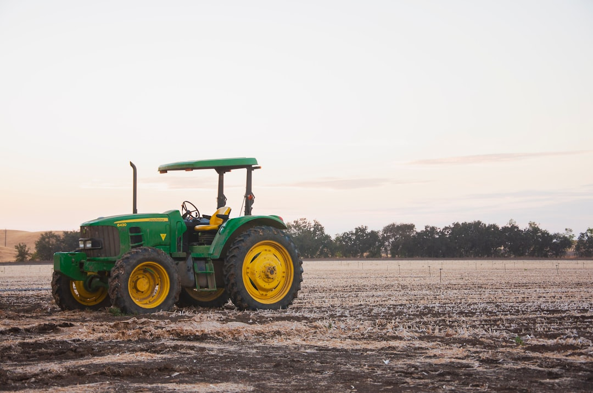

Как выбрать минитрактор: ответы на частые вопросы

Выбор минитрактора - это инвестиция, которая должна окупиться эффективностью и надежностью. Этот FAQ поможет вам разобраться в ключевых аспектах выбора, чтобы ваша покупка была максимально обдуманной и соответствовала всем поставленным задачам.
Перед покупкой минитрактора важно четко определить круг задач, которые он будет выполнять. Это может быть пахота, боронование, кошение травы, уборка снега, перевозка грузов, уход за газоном или коммунальные работы. Каждая задача требует определенного набора характеристик: мощности, массы, типа привода, наличия гидравлики и вала отбора мощности (ВОМ), а также соответствующего навесного оборудования. Правильное определение задач поможет избежать переплат за ненужные функции и обеспечит максимальную эффективность работы.
При выборе минитрактора следует уделить внимание таким параметрам, как мощность и тип двигателя, трансмиссия, привод (2WD/4WD), масса, гидравлика, ВОМ, клиренс, колея и радиус разворота. Эти характеристики напрямую влияют на тягу, ресурс и производительность машины. Важно также учитывать эргономику, удобство посадки, обзорность и компоновку рычагов управления, хотя они и являются второстепенными по сравнению с основными техническими показателями.
Мощность двигателя выбирается исходя из площади обрабатываемого участка и сложности выполняемых работ. Для дачи и легких задач, таких как кошение травы или перевозка небольших грузов, достаточно минитрактора мощностью 15-25 л.с. Для более серьезных работ, включая пахоту и почвообработку на больших площадях (от 2-6 гектаров), рекомендуется выбирать модели мощностью 30-50 л.с. Дизельные двигатели предпочтительнее благодаря своей экономичности и высокому крутящему моменту на низких оборотах.
Выбор трансмиссии зависит от специфики эксплуатации. Механическая трансмиссия является более бюджетным и ремонтопригодным вариантом, идеально подходящим для полевых и транспортных задач, где важны простота и предсказуемость. Гидростатическая трансмиссия обеспечивает плавное изменение скорости и направления движения, что делает ее удобной для коммунальных работ, погрузочно-разгрузочных операций и работы с щеткой. Наличие реверсивной коробки передач обязательно для эффективной работы с активным навесным оборудованием, таким как фронтальный отвал или ковш.
Полный привод (4WD) необходим для работы на рыхлых, влажных грунтах, на уклонах, при уборке снега и буксировке тяжелых прицепов по бездорожью. Он значительно повышает проходимость и тяговое усилие. Для легких дачных работ на твердом грунте и газоне достаточно заднего привода (2WD), который экономит бюджет и бережнее относится к поверхности. Однако для межсезонья, снега и фрезерования почвы 4WD практически незаменим, несмотря на увеличение стоимости и расхода топлива.
Кабина становится необходимостью при круглогодичной эксплуатации минитрактора, особенно в условиях холодного климата или при выполнении коммунальных задач. Она обеспечивает защиту оператора от осадков, ветра, мороза и шума, повышая комфорт и безопасность работы. Полноценные жесткие кабины с отопителем, стеклоочистителями и хорошей шумоизоляцией обычно устанавливаются на машины мощностью от 25-30 л.с. Для менее мощных моделей могут предлагаться облегченные тент-кабины, которые защищают от дождя, но не от сильного холода.
Минитракторы делятся на несколько типов в зависимости от назначения. Компактные модели (15-24 л.с., 2WD или компактный 4WD) идеально подходят для дачи и приусадебного хозяйства, выполняя задачи по кошению, рыхлению и перевозке грузов. Сельскохозяйственные минитракторы (30-50 л.с., 4WD, усиленная рама) предназначены для фермерских работ, таких как пахота, почвообработка и использование тяжелого навесного оборудования. Универсальные модели (24-36 л.с., 4WD, реверс) представляют собой компромиссное решение для круглогодичной эксплуатации с частой сменой навески, например, для коммунальных нужд.
Навесное оборудование выбирается исходя из календаря и типа работ. Весной актуальны плуг и фреза, летом - косилка и прицеп, осенью - щетка, зимой - отвал и снегоуборщик. Важно учитывать совместимость навески с минитрактором: тип трехточечной навески (категория 0 или 1), обороты и тип ВОМ (задний, передний, независимый, синхронный), требуемая мощность и вес агрегата. Всегда оставляйте запас мощности, так как мокрая трава или липкая глина увеличивают нагрузку.
Для пахоты целинной земли необходим плуг на 1-2 корпуса. Минитрактор должен быть полноприводным (4WD), мощностью 24-35 л.с., иметь пониженные передачи и возможность установки балласта на колеса для лучшего сцепления. Для рыхления и подготовки грядок используется почвофреза шириной 1.0-1.4 м. Для этой задачи подойдет минитрактор мощностью 20-35 л.с. со стабильным ВОМ и защитными дугами.
Для кошения травы используется роторная или сегментная косилка. Подойдет минитрактор мощностью 15-30 л.с., допустим 2WD, с широкой резиной для бережного отношения к газону. Для уборки территории, например, от мусора или листьев, применяется щетка шириной от 1.2 м. Для ее работы необходим гидровыход, а также реверс или гидростатическая трансмиссия для удобства маневрирования.
Для уборки снега используется отвал или шнековый снегоуборщик. Минитрактор должен быть полноприводным (4WD), мощностью 20-40 л.с., с резиной, предназначенной для снега, и системой теплого пуска. Кабина значительно повышает комфорт работы в зимних условиях. Для перевозки грузов весом 0.5-1.5 т необходим прицеп. На твердом покрытии подойдет 2WD, но для грунтовых дорог и тяжелых грузов лучше выбрать 4WD и обязательно проверить исправность тормозов прицепа.
При выборе минитрактора крайне важно учитывать доступность сервиса, запчастей, фильтров и расходных материалов в вашем регионе. Регулярное техническое обслуживание, включающее замену масла, фильтров, регулировку сцепления и привода, является залогом долговечности машины. Перед покупкой рекомендуется проверить доступность к основным узлам под капотом (масляный фильтр, топливный отстойник, ремни, радиатор). Наличие склада запчастей и квалифицированного сервисного центра рядом значительно сократит время простоя в случае поломки.
Бюджетный минитрактор подразумевает компромиссы, но не за счет ключевых характеристик. Выбирайте простой дизельный двигатель мощностью 15-24 л.с., механическую трансмиссию, 2WD или подключаемый 4WD, один гидровыход и базовый ВОМ. Экономить можно на опциях, но не на качестве шасси, рамы и массы. Важно, чтобы коробка имела пониженные передачи, задний ВОМ был стабильным, а трехточечная навеска надежной. Стальная рама без сомнительных усилителей - признак надежности.
Выбор между новым и б/у минитрактором зависит от ваших финансовых возможностей и готовности к рискам. Новый минитрактор предлагает предсказуемый ресурс, гарантию и минимальные простои, но стоит дороже. Б/у техника привлекает низкой ценой, но может иметь скрытые дефекты в гидравлике, коробке или электрике, что ведет к незапланированным расходам и простоям. Если техника является основным источником дохода, новый минитрактор с гарантией предпочтительнее. Для редкого использования можно рассмотреть крепкое б/у, но с обязательной очной диагностикой.
Стоимость минитрактора - это не только цена самого шасси. В общую сумму следует включить стоимость обязательного навесного оборудования под ваши основные задачи, возможно, второй комплект резины под сезон, доставку и пуско-наладку на участке, а также первое техническое обслуживание и расходные материалы на сезон вперед. Не забудьте о форс-мажорном фонде на мелкий ремонт. Покупайте у официального дилера или проверенного салона, чтобы получить гарантию и доступ к сервису.
Для дома и хозяйства, если основные задачи включают кошение газона, легкие транспортные работы, подойдет минитрактор мощностью 15-24 л.с. с задним приводом (2WD) и широкой резиной, оснащенный механической трансмиссией. Если же предполагается уборка снега или работа на участках с уклоном, стоит рассмотреть модель с полным приводом (4WD) и возможностью установки отвала.
"Самый лучший" минитрактор - это тот, который наиболее полно и эффективно решает ваши задачи, не допуская простоев и перегрузок. По опыту экспертов, универсальные модели мощностью 24-36 л.с. с полным приводом (4WD) и реверсивной трансмиссией способны закрыть до 80% бытовых и коммунальных сценариев использования, предлагая оптимальный баланс между мощностью, маневренностью и функциональностью.
Для дачи оптимальным выбором будет компактный минитрактор мощностью 15-24 л.с. с механической трансмиссией, трехточечной навеской категории 0-1. В комплект к нему обычно приобретают роторную косилку и отвал для снега. Примерами таких рабочих лошадок начального уровня являются модели Файтер Т-15 и Скаут Т-15, которые отличаются простотой конструкции и доступностью запчастей.
Для работы в поле, включая пахоту и обработку больших участков, необходим более мощный минитрактор: 30-50 л.с., с полным приводом (4WD), пониженными передачами, двумя гидровыходами и надежным валом отбора мощности (ВОМ). Такие машины, как Кентавр Т-654, относятся к "взрослому" сегменту и способны справляться с серьезными сельскохозяйственными задачами.
Для эффективной уборки снега рекомендуется выбирать минитрактор с полным приводом (4WD), реверсивной или гидростатической трансмиссией. Важным элементом является навесное оборудование - отвал или шнековый снегоуборщик. Для комфортной работы в условиях метели и мороза желательно наличие кабины с хорошей оптикой и системой теплого пуска двигателя.
Если у вас уже есть мощный мотоблок, который справляется с основными задачами, то при выборе минитрактора стоит избегать дублирования функций. В этом случае можно рассмотреть компактную модель мощностью 15-18 л.с., которая будет использоваться для задач, недоступных мотоблоку, например, для буксировки прицепа или работы с более широким навесным оборудованием.
Скачать FAQ в PDFНе нашли ответа?
Если у вас остались вопросы или вы хотите получить индивидуальную консультацию по выбору минитрактора, наши эксперты готовы помочь. Свяжитесь с нами, чтобы получить профессиональную поддержку и подобрать идеальное решение для ваших задач. Получить консультацию Купить минитрактор.
Не нашли ответа?
Если нужен следующий шаг, подготовьте вводные по задаче, срокам и ограничениям - документ можно адаптировать под конкретный проект.